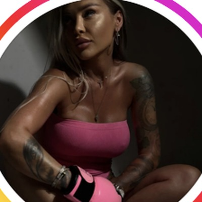
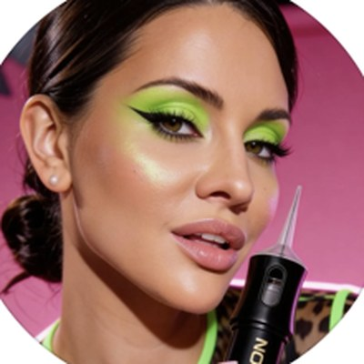
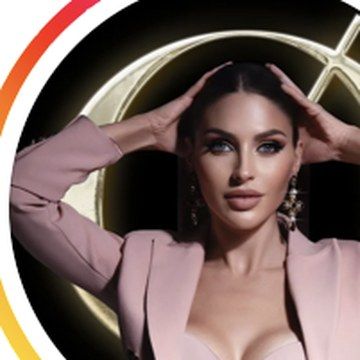
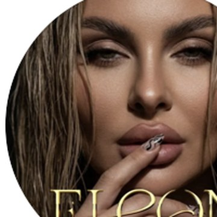
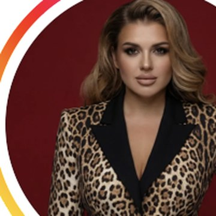
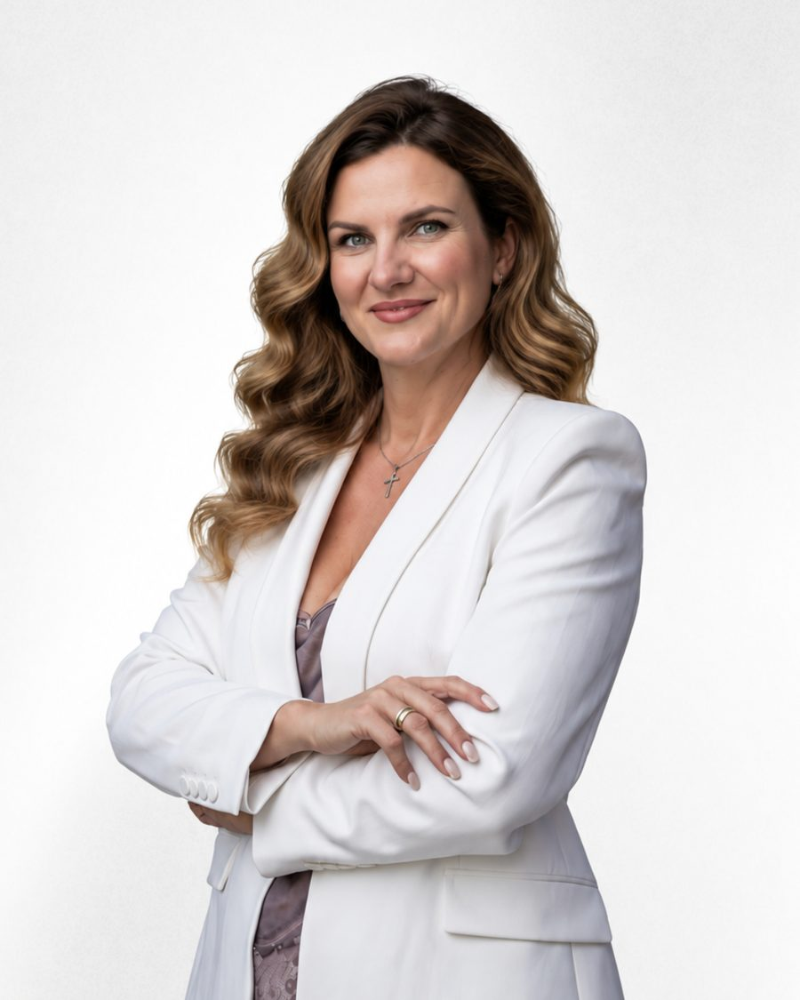
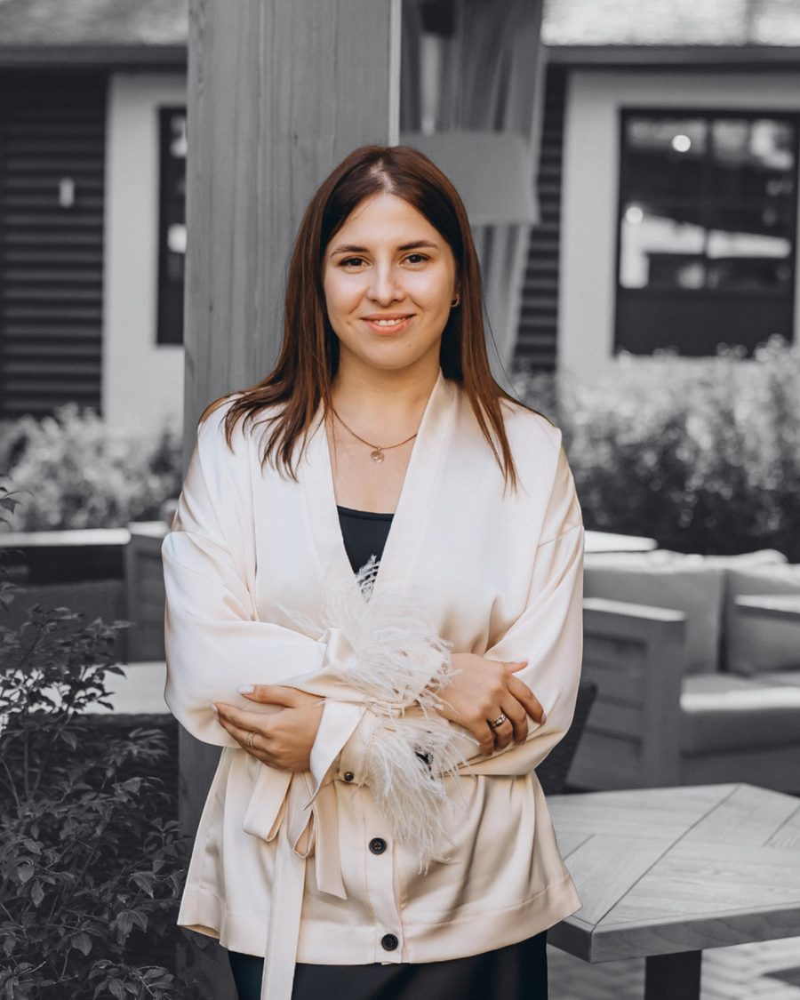
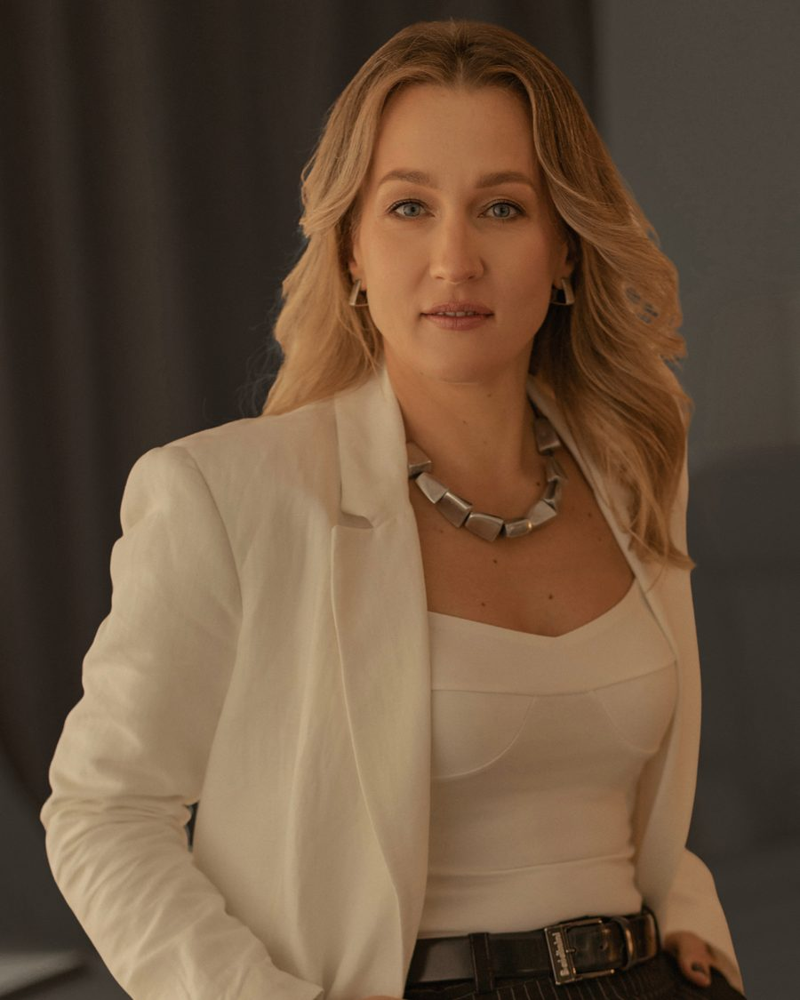
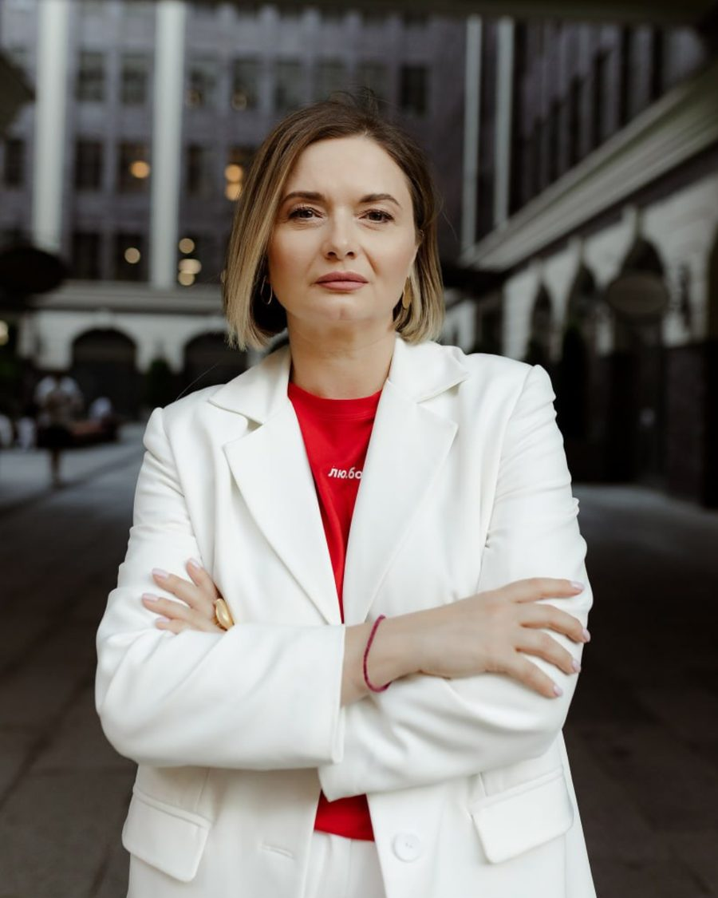
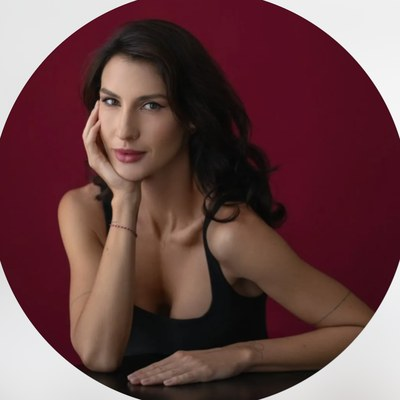

Beauty Games · внутренний документ · 10 ноября 2026
Beauty Games — всё о проекте
Всё, что нужно менеджеру по продажам: что за проект и кто за ним стоит, какие эксперты ведут участниц, что продаём и почём, откуда приходят заявки и как довести их до оплаты. Документ внутренний, ссылку клиенткам не пересылайте.
01Проект, аналогов которому нет
Ни в Украине, ни в мире ещё не было проекта, где бьюти-мастер одновременно учится бизнесу у лучших экспертов, играет в команде, снимается в реалити-шоу и выходит на сцену финала. Beauty Games — первый.
Мастер заходит с ремеслом —
а выходит предпринимателем с системой.
Цель сезона — не ещё один сертификат в папку, а рост дохода в деньгах. Посчитанная экономика, поднятый чек, поток клиенток и план на год. И всё это на глазах у многотысячной аудитории индустрии.
Бизнес-программа от топ-экспертов
Девять модулей — от мышления и цены до финансов, продаж, команды и стратегии на год. Ведут практики, лучшие в своей нише. Каждый модуль внедряется, а не конспектируется.
Команды, баллы, лиги
Мастера разных направлений в одной команде: не соперницы, а партнёры. Куратор ведёт команду весь сезон. Баллы начисляются за реальные результаты — за деньги в кассе, а не за конспекты.
Реалити на YouTube
Серии каждую неделю три месяца, профессиональная съёмка, открытая таблица лидеров. Зрители голосуют — и имя участницы узнаёт вся индустрия.
Сцена и главные призы
Пять дней вживую, каждый день на выбывание, финальный день — в прямом эфире. Гран-при, Джекпот и путь в команду Сезона 2.
Кому продаём
- Женщины 25–45 лет с действующей практикой и доходом: мастера, преподаватели, тренеры, владелицы салонов, студий и школ.
- Направления: PMU, косметология, брови, ресницы, ногти, визаж, парикмахеры-стилисты, наращивание волос, массаж и другие.
- География: проект полностью онлайн. Ядро — украино- и русскоязычные мастера в Украине, Европе и США, в первую очередь украинки за границей.
- Её боли: мало клиентов, не работает продвижение, страшно поднять цену, хочется учить других, не хватает бизнес-навыков. На каждую в проекте есть ответ.
02Кто за этим стоит: Ирина Вербовая

Больше 20 лет назад, когда в Европе уже гремели чемпионаты, а в Украине о них только мечтали, Ирина привезла этот формат в страну — и впервые вывела украинских мастеров на мировую сцену.
Первый конгресс — Греция, 2015 год, больше 100 мастеров. Ирина сказала им: «Мир должен узнать о наших талантах. Кто со мной?» Дальше были Дубай, Испания, Польша, Грузия, Турция, Казахстан.
- Основательница IBV — International Beauty Voyage и PMU Congress & Championship.
- Президент Общества специалистов эстетической дермопигментации, судья международной категории, основательница Международной академии «QIQ».
- Гран-при её чемпионата однажды стала квартира в Киеве, а в номинации Jackpot разыгрывался Mercedes. Не кубок и не сертификат — квартира и машина.
Имена, которые Ирина вывела на сцену
Это лучший аргумент для клиентки: вот кем становятся мастера, которых замечает Ирина.





03Эксперты: лучшие в своей нише
Мы собрали не одного тренера, а команду практиков с реальными цифрами: продажи, финансы, налоги, стратегия, бизнес-системы. Их задача — довести участниц бизнес-программы до результата в деньгах.

Александра Горобец
Магистр финансов, 10+ лет в бьюти-индустрии, научила сотни мастеров PMU, ламинирования и бровей. Сама прошла путь от мастера, работающего руками, до предпринимателя с системным бизнесом. Ведёт SMM и упаковку бренда, таргет и привлечение платёжеспособных клиентов, систему, делегирование и выход из выгорания.
«Бьюти-индустрия работает по тем же законам, что гостиничный или ресторанный бизнес. Без чётких процессов невозможно стабильно зарабатывать большие деньги».

Елена Головащенко
ТОП-10 тренеров Украины по продажам, совладелица DIA Consulting. 560+ проектов в 61 нише, $17,6 млн подтверждённой чистой прибыли клиентов в Украине, Польше и Казахстане. 12 000+ участников программ. Учит мастеров продавать спокойно и без давления.
Екатерина Вишневецкая
Партнёр Genius Space Телепорт, совладелица международного проекта Proriv. Вырастила компанию в 21 раз за 4 года, 27 000+ участников программ по всему миру. Трижды стартовала с нуля и трижды возвращала компанию в рост. Покажет, как разложить любую цель на цифры и шаги.

Татьяна Заремба
20+ лет в предпринимательстве, бизнес-ментор и аналитик. Стратегическое и антикризисное сопровождение собственников: управленческий учёт, финмодель, юнит-экономика, команда и мотивация.

Ирина Куимова
20+ лет международного опыта, налоговый консультант и бухгалтер. Как открыть ФОП, выбрать выгодную систему налогообложения, не переплачивать и не бояться блокировки карт — фундамент, чтобы открывать салоны и продавать услуги дорого по всему миру.

Татьяна Горильчана
Топ-методолог и стратег, 36,9 тыс. подписчиков. Работает с позиционированием и личным брендом — ведёт VIP-участниц к узнаваемому имени.
А ещё с участницами работают психолог, стилист, маркетолог, астролог-нумеролог, цифровой психолог, энергопрактик, кураторы команд и бренд-наставник для VIP.
04Как идёт сезон
| Этап | Когда | Что происходит |
|---|---|---|
| Бронь места | сразу | Заявка, разговор с менеджером, оплата. Цена фиксируется тем уровнем, который действует в момент брони. |
| Предподготовка | сразу после оплаты | Психолог, блок «Точка роста», стилист, маркетолог. Участница заходит в сезон уже в ресурсе. |
| Старт сезона | 21 декабря 2026 | Фиксируем стартовые показатели: чек, количество клиенток, доход. В конце есть с чем сравнить. |
| Активная фаза | 3 месяца | Модули, командные задания, съёмки серий, баллы, голосование зрителей и таблица лидеров. Каждую неделю. |
| Офлайн-финал и Гранд-Финал | весна 2027 | 5 дней вживую, каждый день на выбывание. Финальный день — прямой эфир на YouTube. |
05Пакеты и цены
Три уровня цены. Лучшая — при брони в течение 24 часов после заявки, сниженная — в течение недели, дальше стандартная. Это не акция «до конца месяца»: уровень фиксируется лично за участницей в момент брони.
| Стандарт | Бизнес рекомендуем | VIP | |
|---|---|---|---|
| Бронь за 24 часа | €690 | €1 290 | €1 990 |
| Бронь в течение недели | €790 | €1 490 | €2 290 |
| Стандартная цена | €990 | €1 590 | €2 490 |
| Рассрочка 50/50 (как на сайте) | €495 + €495* | €795 + €795* | €1 245 + €1 245* |
| Мест в потоке | 130 | 100 | 60 |
| Ценность по отдельности | ≈ €2 500 | ≈ €6 000 | ≈ €12 000 |
| Кратко | Самостоятельное обучение без куратора и без камер. Для опытных мастеров. | Полная программа, куратор, команда Бизнес-лиги, Джекпот в финале. | Всё из Бизнес + бренд-наставник, съёмки в YouTube-реалити, Гран-при в финале. |
- Оплата: картой в евро из любой страны.
- Рассрочка: 50% при бронировании, 50% до старта программы.
- Всего 290 мест. Набор закрывается, когда места разобраны.
- Заявка ни к чему не обязывает: сначала разговор, потом оплата.
Какой пакет кому
- Стандарт — боится камеры и публичности, хочет учиться в своём темпе, опытный мастер, ограничен бюджет.
- Бизнес — хочет системный рост: поднять цену, найти клиентов, посчитать финансы. Готова работать в команде, не против быть в кадре вместе с командой. Это основной пакет, предлагаем первым.
- VIP — хочет имя и медийность: свой курс, школа, выход на учеников, личный бренд. Готова к еженедельным съёмкам как героиня шоу. Крупные VIP-сделки — вместе с Ириной.
06Финал и призы
Гран-при
Главный приз проекта. Получает победительница VIP-лиги в прямом эфире Гранд-Финала. Потом пост-шоу: как она использовала приз и советы инвесторов.
Джекпот
Главная награда Бизнес-лиги. В последний день финала команды переходят в индивидуальную борьбу, Джекпот получает победительница лично. Что внутри — узнаёт на мероприятии.
Приз зрительских симпатий
По итогам открытого голосования во всех каналах проекта. Голоса суммируются.
Джокер
Зрители могут вернуть в игру любимую героиню и вывести её в индивидуальные соревнования. Выиграть Джокер может любая участница, из любой лиги.
- В офлайн-финал выходят 5 команд VIP-лиги и ТОП-3 команды Бизнес-лиги. Лиги не соревнуются между собой.
- Кубки и дипломы — всем призовым местам; 2 и 3 места — подарки от спонсоров.
- 1 и 2 место VIP-лиги и 1 место Бизнес-лиги — бизнес-консультация у спонсора-инвестора.
- Призёры приглашаются в команду Сезона 2: судьи, кураторы, коучи, менторы.
07Откуда приходят заявки и что с ними делать
Продукт со средним чеком не покупают «в лоб» по ссылке. Его продаёт личный разговор: короткий созвон на 15–30 минут. Задача каждого канала — довести человека до этого созвона.
Тёплая база Ирины
Кто это: ученицы Ирины и академии QIQ, участницы её прошлых чемпионатов и конгрессов (IBV, PMU Congress & Championship), подписчицы @verbovaya_irina, мастера, с которыми Ирина уже работала.
Как работаем:
- Получаем от Ирины список контактов, которые можно брать. Без её согласования по базе не пишем.
- Пишем от имени команды Ирины, с отсылкой к ней: «Ирина просила лично вас пригласить». Это не холодный контакт — человек знает Ирину.
- Предлагаем короткий созвон на 15–30 минут: рассказать, как устроен проект, и подобрать формат.
- Сильных мастеров с большим окружением приглашаем ещё и как куратора или амбассадора (условия ниже, решение — за Ириной).
Важно: раньше тёплая аудитория Ирины собиралась гораздо больше, сейчас почти не приходит сама. На созвонах выясняем, почему: это ценная информация для команды, записывайте ответы.
Участницы прошлых чемпионатов, которые остались недовольны
Это девушки с прошлых чемпионатов — наших и чужих, где организация была не самой удачной. Они уже платят за участие в конкурсах, но не получили того, что хотели. Это наша прямая аудитория.
Где искать: комментарии под постами чемпионатов (результаты, судейство, организация), отзывы, отметки в сторис, Telegram-чаты и группы мастеров. Каждую девушку — в таблицу: ник, какой чемпионат, на что жалуется (цитата), этап.
| На что жалуются | Что отвечаем |
|---|---|
| Несправедливое судейство | Открытые критерии, известные судьи, разбор от судьи по желанию |
| Скрытые доплаты, хаос в организации | Прозрачные цены и условия, рассрочка, менеджер на связи |
| Кубок есть, а клиентов и денег не прибавилось | Бизнес-программа, блок монетизации: как упаковать участие и поднять чек |
| Конкуренция и негатив между участницами | Команды из мастеров разных направлений: не соперницы, а партнёры |
Этапы:
- Знакомство. Сочувствие и вопрос о её опыте. Без ссылок и без продажи.
- Разговор. Выслушать историю, рассказать 2–3 отличия под её боль, отправить пост «чем мы отличаемся» или видео Ирины.
- Приглашение. Созвон на 15–30 минут или открытый эфир.
- Созвон. Программа, пакеты, ответы на вопросы, условия брони.
- Оплата. Если «подумаю» — договориться о дате следующего контакта и вернуться в этот день.
Нет ответа — одно напоминание через 2–3 дня, через неделю последнее касание с пользой (эфир, урок). Если у девушки большое окружение мастеров — предложить роль куратора.
Лиды с вебинаров и автовебинаров
Мы проводим цикл экспертных вебинаров: эксперт проекта даёт полезную тему, а в конце приглашаем в шоу. На вебинаре продаём участие в Beauty Games, а не сам вебинар. Записи эфиров потом работают как автовебинары.
- До эфира: люди регистрируются — это уже лид с контактом. Напоминаем о начале.
- В конце эфира: приглашение на личный созвон и специальное условие с коротким дедлайном (бронь за 24 часа = лучшая цена).
- В течение суток после эфира: связываемся со всеми, кто проявил интерес: зарегистрировался, досмотрел, задал вопрос, нажал на кнопку. Тем, кто не пришёл, — запись.
- Автовебинар: человек смотрит запись в удобное время, заявки приходят каждый день. Пишем в тот же день, пока человек «тёплый».
- Источник обязательно помечаем: с какого вебинара и чьего эксперта пришла участница. Эксперт-амбассадор получает 5% с каждой оплаты участниц со своего вебинара (так договорились, например, с Ксенией Воржевой), поэтому без пометки источника процент не посчитать.
Таргетированная реклама
Реклама в Instagram и Facebook ведёт напрямую на заявку или на бесплатный полезный материал (лид-магнит). После него — контакт с менеджером.
- Куда ведёт реклама: форма брони на /price, калькулятор мастера /calculator (мастер сам считает цену, себестоимость и доход), дальше новые лид-магниты (в работе).
- Как приходят заявки: формы сайта отправляют заявку на почту проекта, уведомление с контактами приходит в рабочий чат Telegram.
- Что делаем: пишем в выбранный в заявке мессенджер (Telegram, WhatsApp, Viber или звонок) как можно быстрее. Человек оставил заявку на рекламу — через несколько часов он уже о нас забыл.
- Лид с лид-магнита холоднее, чем заявка на бронь. Начинаем с пользы: «Посчитали? Что получилось?», потом предлагаем созвон.
Кураторы, спикеры и амбассадоры
Эксперты проекта приводят своих учениц и подписчиц по персональной ссылке или кодовому слову и получают 5–10% с каждой продажи. Контакты их учениц нам не передают — к менеджеру человек приходит уже с кодом или ссылкой. Задача менеджера: принять, провести созвон, записать источник.
Порядок, если заявок много
- Входящие заявки на бронь — самые тёплые, первыми в оплату.
- Лиды с вебинаров — в течение суток после эфира.
- Тёплая база Ирины.
- Лиды с лид-магнитов таргета.
- Недовольные участницы других чемпионатов — 20–30 новых диалогов в день.
08Созвон 15–30 минут
Цель — понять, где мастер сейчас, и подобрать формат, а не прочитать презентацию. Больше слушаем, чем говорим.
- Знакомство (2 мин). Кто вы, откуда о нас узнала, сколько у неё времени.
- Где она сейчас (5–10 мин). Направление и стаж. Где принимает, есть ли переезд. Средний чек и сколько клиенток. Что уже пробовала: таргет, акции, SMM, курсы. Что не устраивает. Чего хочет через полгода: поднять чек, больше клиентов, своё обучение, имя.
- Как устроен проект (5 мин). Только то, что отвечает на её боль: бизнес-программа, команда и куратор, шоу, чемпионат. Без всего списка.
- Пакет (3–5 мин). Предлагаем один, под её цель. Чаще всего это Бизнес. Боится камеры — Стандарт. Хочет имя и учеников — VIP.
- Условия (2–3 мин). Цена за 24 часа, рассрочка 50/50, количество мест, предподготовка сразу после оплаты.
- Решение. «Бронируем сегодня по лучшей цене?» Если да — ссылка на оплату. Если «подумаю» — договориться о конкретном дне и времени следующего контакта.
Что услышали на кастдевах (6 интервью, ориентир, не статистика)
- Хотят обучать других — 6 из 6. Свой курс, повышение квалификации, меньше работы руками.
- Мало клиентов — 4 из 6. Часть клиентов уехала, в графике свободные дни.
- Не работает продвижение — 4 из 6. Кроме Instagram каналов нет, таргет и акции не дали результата.
- «Дорого», демпинг, конкуренция; сложно набрать учеников; переезд; не хватает бизнес-навыков — по 3 из 6.
- Боятся: скатиться в демпинг, камеры и публичности, заплатить и получить плохую организацию, пустой мотивации вместо честного разговора.
- 5 из 6 любят свою работу — о выгорании не говорили.
09Возражения и ответы
| Говорит | Отвечаем |
|---|---|
| «Дорого» | Сравните с ценностью по отдельности: Бизнес ≈ €6 000 за €1 290. Это бизнес-программа, команда, куратор, съёмки и чемпионат в одном. Есть рассрочка 50/50. Цель программы — чтобы участие окупилось ростом чека, а не ещё один сертификат. |
| «Подумаю» | Конечно. Лучшая цена держится 24 часа после заявки, потом неделя по сниженной. Давайте договоримся: я напишу вам [день, время] — удобно? |
| «Боюсь камеры, не хочу сниматься» | Не обязательно. В Стандарте камер нет совсем. В Бизнесе вы в кадре вместе с командой. Ключевые героини шоу — участницы VIP. |
| «Я новичок» | Проект рассчитан на мастеров с практикой. Блок «Точка роста» работает с любой стартовой позиции, но максимум получит та, кто уже принимает клиенток. |
| «А если не выиграю?» | Останется то, ради чего всё делается: посчитанная экономика, поднятый чек, поток клиенток, план на год. Плюс доступ к программе, сертификат, записи серий и скидка на следующий поток. |
| «Чемпионат входит в цену?» | Номинации оплачиваются отдельно: Стандарт €150/130/100, Бизнес €130/100/80. В VIP первая номинация включена. Участие не обязательно, но даёт баллы в личный зачёт. |
| «Уже была на чемпионате, разочаровалась» | Выслушать. Не критиковать другой чемпионат. Показать отличие под её боль: открытые критерии и разбор от судьи, прозрачные цены, бизнес-блок, команды без конкуренции. |
| «Новый проект, отзывов нет» | Честно: да, это первый сезон. За ним стоит Ирина Вербовая: IBV, PMU Congress, мастера из 40 стран, призы — квартира в Киеве и Mercedes. Предложить посмотреть эфиры на YouTube. |
| «Живу за границей, как оплатить?» | Картой в евро из любой страны. Проект полностью онлайн, офлайн только финал. |
| «Нет времени» | Уроки в записи, доступ остаётся после сезона. Командная встреча — раз в неделю. Предподготовка начинается сразу, чтобы войти в сезон без спешки. |
10Если спрашивают о партнёрстве
Это не зона менеджера, но полезно знать, что существует. Детали и договорённости — у Ирины.
| Роль | Условия кратко |
|---|---|
| Куратор-амбассадор | Бесплатный вход, приходит с командой от 7 участниц; 5% (7 участниц) или 10% (8–10) с каждой продажи |
| Платный куратор | €650 в призовой фонд + приводит от 5 участниц (5% с продаж) или €950 без своих участниц |
| Спикер | €300 за выступление или бесплатно как спикер-амбассадор с 5–10% с продаж |
| Спонсоры брендов | Пакеты от €900 (тематический партнёр) до €6 800 (генеральный спонсор) + точечные интеграции |
11Ссылки и контакты
- Сайт: beauty-games.pro
- Пакеты, цены и форма брони: beauty-games.pro/price — эту ссылку можно давать клиентке после созвона
- Калькулятор мастера: beauty-games.pro/calculator
- Instagram проекта: @beauty_games.pro · Ирина: @verbovaya_irina
- Telegram-канал: t.me/beauty_games_pro
- Телефон проекта: +38 (067) 631-14-31